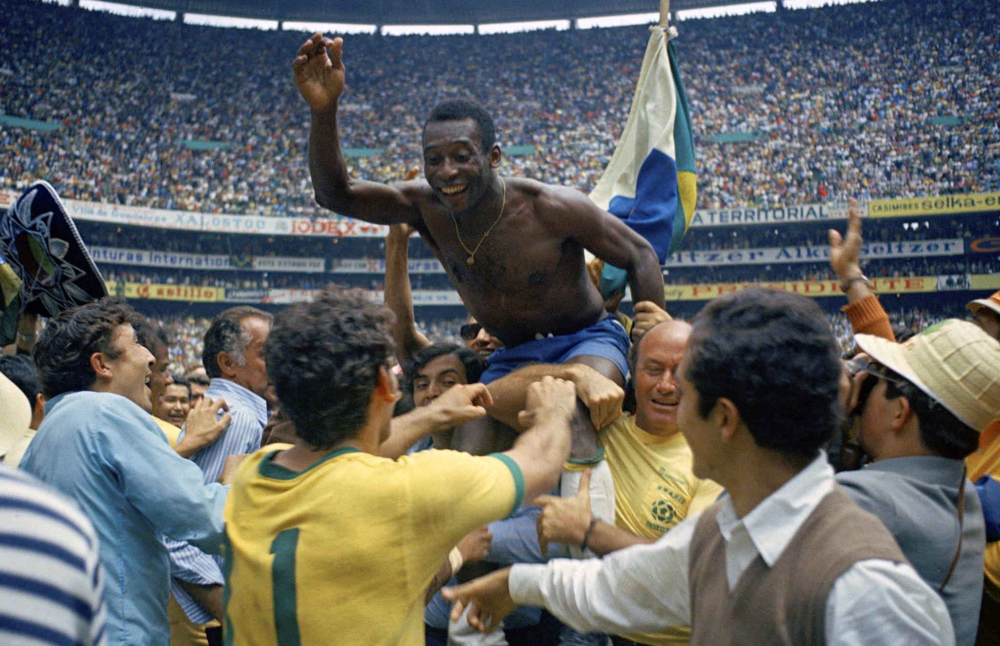

PELÉ
O REI DO FUTEBOL
O homem que transformou o futebol em arte e levou o Brasil ao topo do mundo.

Mais que um jogador.
Uma lenda mundial.
Edson Arantes do Nascimento, conhecido como Pelé, nasceu em 23 de outubro de 1940, em Três Corações, Minas Gerais.
Desde muito jovem demonstrou um talento extraordinário para o futebol. Sua habilidade, inteligência e capacidade de decidir partidas fizeram dele uma referência mundial.
Com a camisa do Santos e da Seleção Brasileira, construiu uma trajetória que marcou para sempre a história do esporte.
Uma vida de conquistas
Os momentos que construíram a história do Rei.
1940
O nascimento
Nasce Edson Arantes do Nascimento, na cidade de Três Corações, em Minas Gerais.
1956
Início no Santos
Pelé começa sua trajetória profissional no Santos Futebol Clube e rapidamente conquista destaque.
1958
Primeiro mundial
Aos 17 anos, conquista sua primeira Copa do Mundo com a Seleção Brasileira.
1962
Bicampeonato
Conquista sua segunda Copa do Mundo com o Brasil, no Chile.
1970
O tricampeonato
Lidera uma das seleções mais marcantes da história e conquista seu terceiro título mundial.
1977
Despedida
Encerra oficialmente sua carreira profissional após sua passagem pelo New York Cosmos.
Os números do Rei
Marcas que entraram para a história do futebol.
3
Copas do Mundo
2
Libertadores
2
Mundiais de Clubes
1.281
Gols na marca frequentemente citada
México, 1970
O mundo aos pés do futebol brasileiro.

O tricampeonato mundial
Na Copa do Mundo de 1970, realizada no México, Pelé foi uma das grandes estrelas da Seleção Brasileira.
A equipe conquistou o tricampeonato ao vencer a Itália na final por 4 a 1, em uma campanha lembrada até hoje pela qualidade do futebol apresentado.
Essa conquista consolidou ainda mais o lugar de Pelé entre os maiores nomes da história do esporte.
O REI É ETERNO
Pelé ultrapassou os limites do futebol. Seu talento, suas conquistas e sua história continuam inspirando gerações em todo o mundo.
Voltar para as lendas